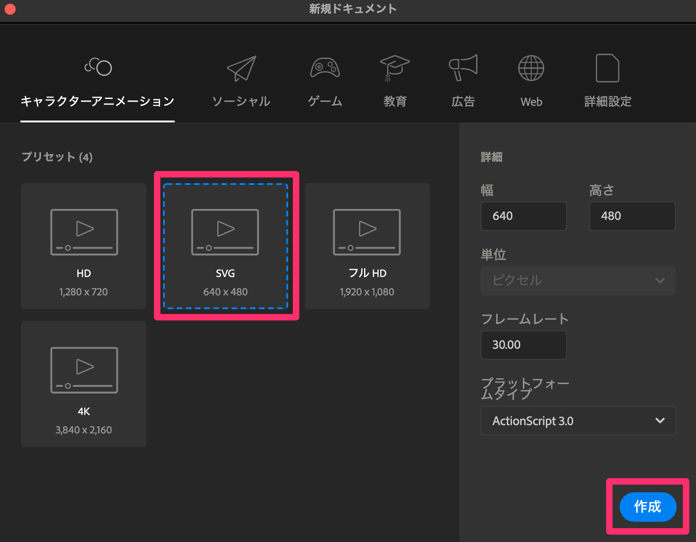
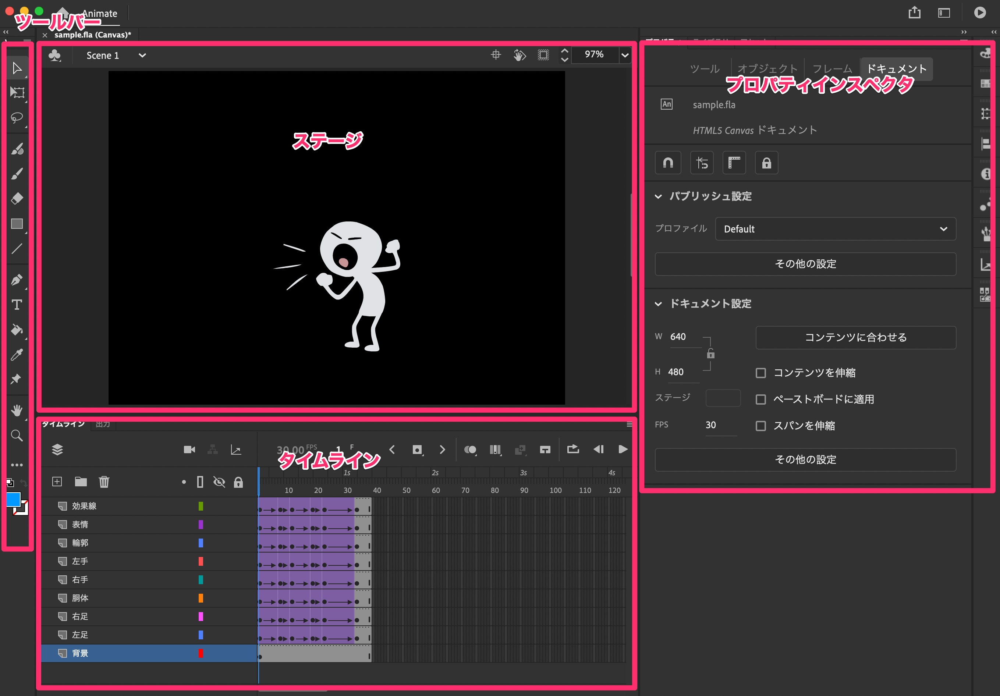

1. 「Adobe Animate」とは？
Adobe Animate（アドビ・アニメイト）は、アドビシステムズが開発・販売している動画やゲームのHTML5を中心としたオーサリング・ソフトウェア。旧称は Adobe Flash Professional（アドビ・フラッシュ・プロフェッショナル）。Adobe Animateは、ベクターグラフィックス・アニメーション制作ソフトであり、HTML5以外にWebGL, Scalable Vector Graphics などのフォーマットが扱える他、旧来の Flash Player (SWF)やAdobe AIRフォーマットも扱える。
1-1. ファイルの新規作成
- 画面左の「新規作成」、もしくは『ファイル > 新規...』、もしくはショートカット『command + n』。
- 「キャラクターアニメーション」-「SVG」を選び、「作成」をクリック。

- 忘れないうちに保存しておく。（Adobe Animateファイルの拡張子は「.fla」）
※「Adobe Animete」は非常に落ちやすいので、こまめに保存すること！
- 【画面構成】

1-2. ステージ
グラフィックコンテンツを配置するための領域。
- 【ショートカット】
-
- 『command + 1』：100%表示
- 『command + 2』：ステージ全体を表示
- 『command + 3』：すべて表示
- 【各種機能】
-
- メニュー『表示 > ルーラー』：ルーラーの表示
1-3. タイムライン
描画したグラフィックなどを横軸の時間で制御する。タイムラインの1マス1マスのことをフレーム、1秒間に進むフレーム数のことをフレームレート(FPS)という。
- 【ショートカット】
-
- 『enter』：再生／停止
- 『shift + ,』：最初のフレームへ
- 『shift + .』：最後のフレームへ
- 『.』：1フレーム進める
- 『,』：1フレーム戻る
※詳細は後日。
1-4. ツールバー
各種ツールが格納されている。右下に三角のあるツールは長押しでサブツールを表示できる。
- 【ショートカット】
- Adobe Animate ユーザーガイド
1-5. プロパティインスペクタ
選択したモノによって様々な設定ができる。授業では「プロパティパネル」、または単に「プロパティ」と言うかも。